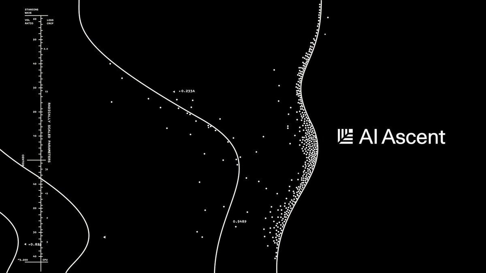

Karpathy 最新访谈：Vibe Coding 只是开始，真正重要的是 Agentic Engineering
Andrej Karpathy 说，他已经记不清上次修改 AI 生成的代码是什么时候了。
Karpathy 参与创建了 OpenAI，在 Tesla 领导过 Autopilot 视觉团队，去年一条推文发明了“凭感觉编程”（Vibe Coding）这个词，后来被 Collins 词典选为 2025 年度词汇。
2026 年 4 月，Karpathy 在 Sequoia Capital 的 AI Ascent 现场接受合伙人 Stephanie Zhan 的访谈。这场 30 分钟的对话覆盖了他对编程范式剧变的亲身感受、Software 3.0 的实质、AI 为什么在某些地方极强而在另一些地方离谱地弱，以及“凭感觉编程”之后更严肃的下一步是什么。


要点速览
- 2025 年 12 月是 Karpathy 个人的转折点：AI 输出从“有帮助但常要修补”变成“直接可用”，他进入完全凭感觉编程的状态。
- Software 3.0 的关键不是“用自然语言写代码”，而是通过 prompt 和 context 操作 LLM 这个新的信息处理解释器。
- MenuGen 案例让 Karpathy 意识到，一些 AI 应用不是会被做得更快，而是会被模型原生能力直接吞掉。
- LLM 的能力高度不均匀：它可以重构 10 万行代码、找零日漏洞，却可能在“去 50 米外洗车该走路还是开车”这种常识题上犯错。
- Vibe Coding 抬高所有人做软件的下限；Agentic Engineering 则是在使用 Agent 提速时，保住专业软件的质量、安全和责任门槛。
- 人类不必再记住每个 API 细节，但必须理解系统结构、底层机制和质量标准，否则无法监督 Agent。
- Karpathy 用“幽灵”形容 LLM：它不是动物式智能，而是由人类文档、预训练统计和强化学习奖励塑造出的锯齿状实体。
- 智能变便宜后，教育的重点不是抵制外包思考，而是确保理解仍然进入人的大脑。
【1】2025 年 12 月：一个程序员的投降
Zhan 问：你几个月前说，自己从未像现在这样觉得作为程序员落后。这是兴奋还是不安？
Karpathy 说两者都有。
过去一年他一直在用 Cursor 等智能体编码工具。早期这些工具有用，可以生成一些代码块，但经常出错需要修改。真正的转折出现在 2025 年 12 月。那段时间他正好休假，有更多时间折腾 side project，明显感觉到最新模型生成的代码块开始“直接能用”。
一开始，他只让模型写一点。结果不错，就继续让它写更多。再往后，他发现自己已经很久没有亲自纠正模型输出了，信任感不断增加。最后他进入了自己后来称为 Vibe Coding 的状态。
我记不得上一次我需要纠正它是什么时候了。然后我就越来越信任这个系统。
这里的 Vibe Coding，不适合硬译成“氛围编程”。更准确地说，它是一种“凭感觉让 AI 写代码”的开发方式：人用自然语言持续提出意图，模型生成、修改、调试代码，人不再像过去那样逐行写、逐行读 diff。Karpathy 2025 年 2 月在 X 上提出这个词时，描述的是一种“放弃对代码本身的直接控制、顺着感觉让模型往前走”的开发体验。
但这场访谈里，Karpathy 的重点已经不只是 Vibe Coding。他强调，很多人对 AI 的印象还停留在“一个类似 ChatGPT 的东西”上：你问一句，它答一句。到 2025 年底以后，值得重新看的是 Agentic coherent workflow——一种更连贯的智能体工作流。模型不只是回答问题，而是能连续规划、写代码、调试、执行、根据环境反馈继续修正。
很多人去年体验到的 AI，还是一个类似 ChatGPT 的东西。但你真的必须重新看一眼，而且要看 12 月之后的版本。
过去程序员的速度主要取决于他能写多少代码、记住多少 API、怎样调试。现在，速度越来越取决于他能否正确地指挥一组强大但会犯错的 Agent。
【2】Software 3.0：给 Agent 复制粘贴一段文字，这就是编程
Zhan 问：你说 LLM 是一种新计算机，不只是更好的软件。如果一个团队真的相信这一点，它会怎样不同地构建产品？
Karpathy 从自己那套软件分期讲起。
Software 1.0 是传统软件：人写显式代码，计算机按规则执行。
Software 2.0 是神经网络时代：人不再直接写所有规则，而是设计数据集、目标函数和神经网络架构，通过训练得到模型权重。Karpathy 早在 2017 年就写过《Software 2.0》，把神经网络视为一种新的软件开发方式。
Software 3.0 则是大语言模型时代。LLM 经过大规模任务训练之后，变成一种可编程的计算机。你不再只是在代码编辑器里写函数，而是在 prompt、context window、文件、工具调用和外部环境之间，组织一段给模型执行的“上下文程序”。
context window 可以理解为模型一次调用中能看到的全部信息：指令、历史对话、文件、错误日志、代码片段、图片、工具返回结果。Karpathy 的说法是，这个上下文窗口成了人操纵 LLM 解释器的“把手”。
他举了一个安装 OpenCL 的例子。传统做法是写一个 shell script，让它适配各种机器、平台和环境。随着目标环境变多，脚本会不断膨胀，最后复杂到很难维护。但在 Software 3.0 里，安装说明本身可能就是一段可以复制给 Agent 的文本。Agent 会读取你的机器环境，执行步骤，遇到错误再调试。
现在的问题变成：哪一段文字应该复制给你的 Agent？这就是新的编程范式。
这句话的重点不是“程序员以后只需要写提示词”。Karpathy 要表达的是，程序边界扩大了。过去的程序是代码文件。现在，程序可能是一段说明、一个上下文窗口、一组工具权限、一个测试环境，外加模型内部已经学到的大量统计结构。
【3】MenuGen：这个 App 不应该存在
Karpathy 接着讲了自己的 MenuGen。
这个 App 的想法很简单：人在餐厅拿到菜单时，通常看不到菜品图片。很多菜名，尤其是陌生菜系里的菜名，光看文字不知道是什么。Karpathy 想做一个应用：拍一张菜单照片，App 识别菜单上的菜名，再为每个菜品生成一张大致图片，最后重新渲染菜单，让用户看到“这些菜大概长什么样”。
用旧范式做这个 App，需要好几层中间步骤：上传照片，OCR 识别文字，抽出菜名，调用图像生成器生成菜品图，再把结果重新排版，部署到 Vercel 上。Karpathy 用 Vibe Coding 把这个 App 做了出来。
然后他看到了 Software 3.0 版本。
做法变成：直接把菜单照片交给 Gemini，然后说，让 Nano Banana 把这些菜品图叠加回菜单上。Nano Banana 返回的不是结构化数据，也不是一组组件，而是一张新的图片：原菜单仍在，但对应菜品的位置已经直接渲染进了图片。
【注：Nano Banana 是 Google Gemini 的图像生成和编辑能力名称，支持用文本、图像或两者结合进行对话式生成与编辑。】
Karpathy 认为他原来写的 MenuGen 是多余的，因为它还停留在旧范式里。
我的整个 MenuGen 都是多余的。它还停留在旧范式里。那个 App 不应该存在。
这个例子是整场访谈里最关键的商业判断之一。
很多 AI 应用公司以为自己在做“更快的软件”。比如过去一个任务要 10 个步骤，现在 App 帮你压成 3 个步骤。但在 Software 3.0 里，模型本身的输入输出可能直接覆盖这个任务，中间 App 的结构就失去必要性。
Karpathy 进一步说，这种变化不只发生在代码里。传统代码擅长处理结构化数据：表格、数组、数据库字段、明确规则。但 LLM 可以处理更一般的信息重组。比如他的 LLM Knowledge Bases 项目：把文章、文档和事实重新编译成个人或组织 wiki。这不是传统程序天然擅长的东西，因为它要求模型理解文本之间的关系、重新排序信息、生成新的知识结构。
更令人兴奋的不是把已有东西做得更快，而是那些以前根本不可能存在的东西。
【4】神经计算机：CPU 变成协处理器
Zhan 问：把这种进展外推到 2026 年，什么是今天大部分人还没建出来、回头看会觉得理所当然的东西？
Karpathy 提出了一个更大胆但也更不确定的设想：未来可能出现一种完全的“神经计算机”。
今天的计算机仍然以 CPU、操作系统、传统程序为中心。神经网络运行在现有计算机之上，像是一个被虚拟化出来的能力模块。但 Karpathy 设想，未来有可能反过来：神经网络成为 host process，也就是主流程；CPU、传统代码和工具调用变成协处理器，负责一些确定性任务。
他举的想象场景是：一个设备接收原始视频或音频，神经网络理解当前场景，再用扩散模型为这一刻生成一个独特的 UI。用户看到的界面不再是固定组件拼出来的，而是由模型根据上下文实时生成。
他也很快给这个判断加了限制：这种外推看起来很怪，具体路径仍然 TBD，不会一夜之间发生，而会一块一块地到来。
“神经网络成为主进程”不是一个已经发生的产品事实，更像是他用来解释方向感的心智模型。
【5】LLM 能重构 10 万行代码，却让你走路去洗车
Zhan 问：如果 AI 更容易自动化可验证领域，哪些工作会比人们想象中更快移动？哪些看起来安全的职业，其实高度可验证？
Karpathy 没有直接列职业。他转向解释“可验证性”。
他的核心判断是：
传统计算机容易自动化你能写进代码的东西；这一代 LLM 容易自动化你能验证的东西。
传统软件自动化的前提，是人能把规则精确写出来。比如税率计算、排序、数据库查询、订单状态流转。只要规则清楚，就能写代码。
LLM 的自动化边界不同。它不一定需要你把规则全部写出来，但它需要某种方式判断输出好坏。数学题可以验证答案。代码可以跑测试。某些安全问题可以通过漏洞复现判断。这样的任务能进入强化学习（RL）环境：模型尝试解题，系统给奖励或惩罚，模型在大量样本中优化行为。
所以，模型在数学、代码和相邻领域能力提升很快，并不只是因为“模型整体更聪明了”。Karpathy 认为，这和前沿实验室如何训练模型有关。实验室构造了大量可验证任务，把它们放进训练和强化学习流程里，模型就在这些地方形成高峰能力。
这也解释了 LLM 的“锯齿状智能”（jagged intelligence）：能力曲线不是平滑上升，而是有高峰和断崖。有些任务强得惊人，有些任务弱得荒诞。
Karpathy 说，现在更好的例子是洗车题：我要去 50 米外的洗车店洗车，应该开车还是走路？最先进的模型可能会说，走路，因为很近。这个回答忽略了问题的关键：你要洗的是车，所以车必须到洗车店。
一个最先进的模型可以重构 10 万行代码、找到零日漏洞，却告诉我应该走路去洗 50 米外的车。
【注：零日漏洞指尚未公开或尚未修补的安全漏洞。】
如果一个任务落在模型训练和 RL 覆盖过的能力回路里，它可能表现得像专家。如果落在数据分布外，即使人类觉得很简单，它也可能出错。
**这对使用者的要求很高。**你不能因为模型在代码上很强，就默认它在所有工程判断上都强。你也不能因为它犯了洗车题这种错误，就断定它整体没用。更准确的做法是：探索它的能力边界，找出哪些任务在“能力高峰”里，哪些任务在“断崖”旁边。
【6】能力不是自然进化，和实验室的数据决策相关
Karpathy 提到一个细节：从 GPT-3.5 到 GPT-4，国际象棋能力提升非常大。很多人以为这是能力的自然进化，但实际上是因为有人在 OpenAI 决定把大量国际象棋数据加进了预训练。数据进了分布，能力就跟着上去了。
这把一个看起来“模型变强”的故事，重新解释成了一个“实验室在做产品决策”的故事。
某种程度上，我们完全受制于实验室给模型喂了什么数据。如果你的场景刚好落在 RL 训练覆盖的“能力回路”里，模型就会带你起飞；但一旦超出了这个数据分布，它就会觉得极其吃力。
**实操含义：**如果你的应用场景在覆盖的能力回路里，开箱即用；如果在外面，你需要自己做微调，不要指望 LLM 一上来就会。
【7】创业机会：找一个还没被 RL 覆盖的可验证领域
Zhan 问：如果创业者今天想解决一个可验证的问题，但大模型实验室已经在数学、代码等最明显领域加速了，创业者该怎么办？
Karpathy 的回答没有给出具体赛道，但给出了一种找机会的方法。
在当前技术范式下，可验证性让一个问题变得“可解”。如果你能构造大量、多样的强化学习环境，能让模型尝试、失败、获得奖励，那么即便大实验室没有把这个领域作为重点，你也可能通过自己的微调和训练获得优势。
他说到这里时，几乎要举一个自己认为很有价值的领域，但停住了。
我不想直接给出答案……抱歉，我不是有意在台上发含糊推文的。
台下笑了。
这个停顿本身也说明了他的判断：机会不是“再做一个 AI Agent”这样泛泛的方向，而是找到某个可构造奖励环境的具体问题。
他还补了一句更激进的话：几乎所有事情，最终都可能在某种程度上变得可验证。写作、设计这类看似主观的任务，也可以想象用一组 LLM judges，也就是模型评审团，形成某种近似评价。
这句话需要谨慎理解。Karpathy 并不是说所有任务都能被完美自动验证。他说的是“程度”和“难易”。数学和代码比较容易，因为答案或测试相对明确。写作、审美、战略判断则要困难得多。
【8】Vibe Coding 抬高下限，Agentic Engineering 保住上限
Zhan 问：去年你提出 Vibe Coding。今天我们进入了一个更严肃的世界，更像 Agent engineering。二者的区别是什么？
Karpathy 的区分非常清楚。
**Vibe Coding 抬高的是下限。**更多人可以用自然语言和 AI 做出软件。不会写代码的人可以做小工具，会写代码的人可以更快做 side project。软件创造的入口变宽了。
**Agentic Engineering 保住的是上限。**它面对的是专业软件：不能因为用了 AI 就引入安全漏洞，不能因为模型写得快就降低质量门槛，不能因为代码是 Agent 生成的就没人负责。
Vibe Coding 抬高的是所有人能做软件的下限；Agentic Engineering 要保住的是专业软件过去已有的质量门槛。
Agentic Engineering 可以译作“智能体工程”。它不是一个具体工具，而是一种工程纪律：如何设计、协调、监督一组 AI Agent，让它们在不牺牲质量、安全、可维护性的情况下加速开发。
Karpathy 说，这些 Agent 是“spiky entities”——有尖刺的实体。它们能力很强，但会犯错，有随机性，不稳定。工程师的工作不是盲目信任它们，而是把它们放进合适的流程里：让它们生成方案、写代码、跑测试、互相检查，让系统有边界、有验证、有回滚。
Karpathy 还提到一个更强的判断：过去软件行业喜欢说“10x engineer”，也就是效率远超普通人的工程师。但在 Agentic Engineering 里，他看到的加速幅度可能远不止 10 倍。
10x 不是你获得的加速倍数。
真正熟练的人，能把多个 Agent、工具、测试和上下文组织起来，产出速度会被放大得更厉害。
【9】AI-native 工程师：不是会刷题，而是能把大项目做安全
Zhan 问：如果观察两个使用 AI coding 工具的人，一个普通，一个真正 AI-native，区别会是什么？
Karpathy 先说，AI-native 工程师会充分利用可用工具，并投资自己的工作流设置。就像过去工程师会花时间配置 Vim、VS Code、命令行、快捷键和开发环境，现在也要花时间配置 Cursor、Claude Code 或类似工具，让它们真正适合自己的工作方式。
但他很快把话题转到招聘。
他认为，很多公司还没有重构面试流程。如果仍然给候选人一组小 puzzle，让他们现场解算法题，这还是旧范式。它测不出一个人是否会在 Agentic Engineering 里高效工作。
更好的测试应该是大项目。比如让候选人做一个 Twitter clone：不仅要能跑，还要做得好、做得安全。然后再用多个 Agent 去攻击这个网站，尝试破坏它，看看系统能否经得住。
面试本该是这样的：甩给候选人一个极大的项目，比如做个给 Agent 用的 Twitter 仿盘，要求做得绝对安全。然后，我挂上 10 个 Cursor 当作“红队”，放开手脚去攻击你做出来的这个网站。
**这套评估方式的核心，不是看候选人能不能手写某个算法，而是看他能不能：**把模糊目标变成清晰规格；指挥 Agent 完成大规模实现；识别安全和架构风险；设置测试与验证；在模型生成的大量代码里保持质量判断；让最终系统经得起外部攻击和压力。
【10】Agent 能写代码，但还会把付款绑到错误邮箱上
Zhan 问：Agent 做得越多，什么人类技能会变得更有价值？
Karpathy 的答案是：品味、判断、审美、监督，以及规格设计。
他把当前 Agent 比作实习生。这个比喻很准确，但不能过度拟人化。Agent 不是真的有人类动机的员工，它只是执行能力越来越强，同时会在一些人类觉得显而易见的地方犯错。
Karpathy 举了 MenuGen 的一个实际问题。用户用 Google 账号登录，但购买 credits 时使用 Stripe 账号。Google 和 Stripe 都有邮箱地址。Agent 在实现购买逻辑时，试图用 Stripe 邮箱去匹配 Google 邮箱，把购买的 credits 归到对应用户身上。
这听起来好像合理，但在工程上是危险的。一个人完全可能用一个邮箱登录 Google，用另一个邮箱付款。如果系统用邮箱关联资金，就可能出现购买记录无法归属、资金错配或账户混乱。正确做法应该是使用系统内部稳定的 persistent user ID 来绑定用户身份和支付记录。
你为什么要用邮箱地址来交叉关联资金？它们可以是任意的，你可以用不同的邮箱。这种做法太奇怪了。
这类问题没有语法错误，代码可能能跑，测试可能还过，但系统设计是错的。Agent 没有真正理解身份、支付和资金归属的风险。
所以 Karpathy 说，人必须负责 spec，也就是规格。你要告诉 Agent：所有资金和用户状态必须绑定到内部唯一用户 ID，而不是绑定到外部邮箱。你要负责顶层设计、约束条件和判断标准。Agent 可以填补实现细节，但不能替你理解系统边界。
他接着举了一个更技术的例子。现在他已经不再记 PyTorch、NumPy、pandas 之间很多细碎 API 差异，比如 keepdims 还是 keepdim，dim 还是 axis，reshape、permute、transpose 分别怎么写。这些细节可以交给 Agent，因为模型记忆很好。
但他仍然强调，人必须理解底层概念。比如张量（tensor）是什么，view 和 storage 的关系是什么，什么时候只是改变同一块内存的视图，什么时候会复制数据。如果不懂这些底层机制，就可能让模型写出低效甚至错误的代码。
这给“什么值得学”提供了一个非常具体的答案：**细节可以外包，理解不能外包。**API 名称可以忘，但概念结构不能丢。
【11】模型写出的代码能跑，但有时“很丑”
Zhan 追问：taste 和 judgment 会不会随着模型进步而越来越不重要？
Karpathy 没有把话说死。他希望模型会进步，也认为没有什么根本原因阻止它们在品味、审美和简洁性上变好。但他指出，至少现在，这些能力还没有被很好地训练出来，可能因为它们没有进入足够好的 RL 奖励环境。
他看模型生成的代码时，有时会“心脏病发作”。代码能跑，但不一定好。它可能很臃肿，有很多复制粘贴，有别扭的抽象，结构脆弱，维护起来很难。
有时我看到它写出来的代码，会有一点心脏病发作的感觉。它能跑，但真的很恶心。
他还提到 MicroGPT 项目。他想把 LLM training 简化到极致，让训练过程尽可能小、清晰、可理解。他不断要求模型“再简化一点”，但模型做不到。那种感觉像“拔牙”一样困难。
我不断地让 LLM“再简化一点”，它就是做不到。你能感觉到你在 RL 回路之外。就像在拔牙。
Karpathy 的解释是，这个任务可能走出了模型被 RL 覆盖的能力回路。模型擅长生成常见工程形态，却不擅长极简、克制、优雅的抽象压缩。
【12】我们不是在造动物：Karpathy 说我们召唤的是“幽灵”
Zhan 问：你写过一篇关于 animals vs ghosts 的文章，核心意思是我们不是在造动物，而是在召唤幽灵。这个框架为什么重要？
Karpathy 说，他写这篇文章，是因为自己也在试图理解这些模型到底是什么。如果你对模型是什么有一个更好的心智模型，你就会更擅长使用它。
“幽灵”这个词听起来神秘，但 Karpathy 的意思并不玄学。他是在对比两种智能来源。
动物智能来自进化、身体、环境互动、内在动机、好奇心、乐趣、持续学习。动物会在世界中行动，被后果塑造，会在生命过程中不断适应。
LLM 不是这样。今天的前沿 LLM，首先来自大规模预训练：模型在海量人类文档上学习统计结构。然后再叠加强化学习、偏好数据、工具调用等后训练过程。它们不是动物式智能，而是由人类文档、统计模式和奖励函数塑造出的模拟实体。
在访谈里，他把这个比喻落到一个很朴素的使用原则上：**不要把 LLM 当动物。**你对它大喊大叫，不会让它因为害怕而更努力。你鼓励它，也不是在激发它的内在动机。模型没有动物式情绪。它的行为来自统计模拟、上下文、工具、训练数据和奖励机制。
如果你对它大吼，它不会因此工作得更好或更差，也没有任何影响。
Karpathy 也承认，“幽灵”框架有哲学化的一面。他没有说它能直接产出五条系统优化建议。它更像一种防止误用的提醒：不要笼统地问“AI 聪不聪明”，要问它在哪些训练分布里强，哪些奖励信号塑造了它，在哪些任务上可能出现锯齿状断崖。
【13】Agent-first 基础设施：一句话构建并部署 MenuGen
Zhan 问：当 Agent 不只聊天，而是拥有权限、本地上下文，并能代表人采取行动时，世界会变成什么样？
Karpathy 说，几乎一切都要重写。今天的工具、文档、服务和设置流程，仍然主要是为人设计的。
比如一个框架的文档会告诉你：去某个 URL，点击某个设置，复制某个 key，打开某个菜单，配置某个 DNS。Karpathy 的反应是：为什么还在告诉我该怎么做？我不想做这些事。我想知道的是，哪一段东西可以复制给我的 Agent，让它自己去做。
为什么还有人在告诉我该做什么？我什么都不想做。“给我复制粘贴给 Agent 的东西是什么？”
这不是懒，而是范式变化。Agent-first infrastructure 的目标，是把世界拆成 Agent 能读懂的输入，以及 Agent 能安全调用的动作接口。
在软件基础设施里，这意味着文档、API、权限、日志、部署、配置、账单、回滚，都要变得更适合 Agent 使用。不是让 Agent 模拟人去点网页，而是让 Agent 直接理解状态、调用动作、收到反馈。
Karpathy 又回到 MenuGen。他说，做 MenuGen 最麻烦的部分其实不是写代码，而是部署：在 Vercel 上部署，连接各种服务，进入不同设置页面，配置 DNS，把所有东西串起来。
他希望未来的测试标准是：给 LLM 一句 Build MenuGen，它不仅能写代码，还能完成部署，上线到互联网，配置好依赖服务，而且整个过程不需要人去一个个菜单里操作。
更远一点，他设想每个人、每个组织都可能有自己的 Agent representation。以后安排会议、处理细节、协调事项，可能变成“我的 Agent 和你的 Agent 去谈”。
【14】智能变便宜后，最贵的是理解
Zhan 最后问：当智能变得便宜，什么仍然值得深入学习？
Karpathy 引用了一句话：
你可以外包你的思考，但不能外包你的理解。
这句话容易被写成励志格言，但 Karpathy 的解释很具体。
他仍然是系统的一部分。信息必须进入他的脑子里。他觉得自己正在变成瓶颈：要知道到底在建什么，为什么值得做，怎样指导自己的 Agent。思考步骤可以让模型跑很多遍，但如果人没有理解，就无法判断哪条路线是对的，无法写出好的规格，也无法发现 Agent 在身份绑定、系统结构、代码质量上的错误。
我感觉自己正在变成瓶颈：我要知道我们到底在建什么，为什么值得做，以及怎样指导我的 Agent。
这也是他对 LLM knowledge bases 感兴趣的原因。他喜欢把文章、资料、事实重新投影成 wiki，因为不同的信息组织方式能帮助他获得洞见。对他来说，这不是让 AI 代替理解，而是用 AI 增强理解。
这一点和前面的工程例子连在一起：
- Agent 可以记 API 细节，但人要理解 tensor、view、storage 和内存效率；
- Agent 可以写支付逻辑，但人要理解用户身份和资金归属；
- Agent 可以生成大量代码，但人要判断抽象是否臃肿、结构是否脆弱；
- Agent 可以帮你思考很多方案，但人要知道目标是否值得做。
所以，**智能变便宜之后，学习不是不重要了，而是学习的重心变了。**更少时间花在机械记忆和低层执行上，更多时间花在系统理解、问题定义、质量判断、因果关系和领域直觉上。
Q&A 速览
问：2025 年 12 月发生了什么？
答：最新模型生成的代码不需要修改了，可靠性在持续的项目中也保持住了。
问：Software 3.0 和以前有什么不同？
答：以前的代码处理结构化数据，现在你可以处理任意信息。以前做不了的东西现在可以了。这不是加速，是新的可能性。
问：为什么最先进的 AI 模型在简单任务上犯低级错误？
答：能力分布取决于 RL 训练覆盖的领域和实验室的数据选择。可验证的领域能力飙升，其余领域可能很弱。
问：Vibe Coding 和 Agentic Engineering 的区别？
答：Vibe Coding 是提升所有人的下限，Agentic Engineering 是保持专业标准的前提下利用 Agent 加速。
问：什么时候人的品味和判断会不重要？
答：可能会，但前提是实验室把审美奖励纳入 RL 训练目标。目前 Agent 的代码经常“能跑但很难看”。
【最后】
这场访谈里，Karpathy 的判断有几个值得注意的张力。
第一，他一边说 Agent 写出的代码丑得让他心脏病发作，一边说他自己已经停止修改了。“信任并没有解决品味的问题”——能跑的代码和好代码不是一回事。可这种“用着丑的，但用着”的状态，可能比任何 hype 都更接近真实的 Vibe Coding 现状。
第二，他暗示有“被低估的 RL 机会”领域却不愿公开。一个不愿在台上发含糊推文的人主动回避，本身是个信号：窗口期还没关。值得注意的是，他的公司 Eureka Labs 做的是 AI 教育，而教育恰好是一个输出可以被评估、可以被标准化考核的领域。
第三，他给“动物 vs 幽灵”这个框架自己降了级别，又用“你可以外包思考，但不能外包理解”给整场对谈收束。把这两件事放在一起读：他的判断是，**真正稀缺的不是任何一个具体技能，而是判断“我们到底要做什么、为什么值得做”的能力。**如果“几乎所有领域最终都能被验证”这个判断成立，那么瓶颈最终不在执行端，而在目标设定端。
但这里有一个隐含的时间问号。Karpathy 自己也承认，品味和判断之所以暂时不可替代，原因只是“实验室还没做”。如果这个判断成立，那么所谓人类不可替代的部分，不是因为人类独一无二，而是因为训练方法还没到位。这就把“外包思考但不能外包理解”这句话的有效期打了一个问号。
未来 6-12 个月值得盯三个具体信号：
- 前沿实验室在编程/数学之外，往哪些领域注入 RL 数据——那里的能力会突然冒出来
- Agent-first 的基础设施（部署、auth、payments）会不会有第一波收敛——MenuGen 部署的痛苦如果还在，“自动化社会”的路就长得多
- 模型的下一代更新是否包含审美和代码质量相关的 RL 目标
Want to publish your own Article?
Upgrade to Premium